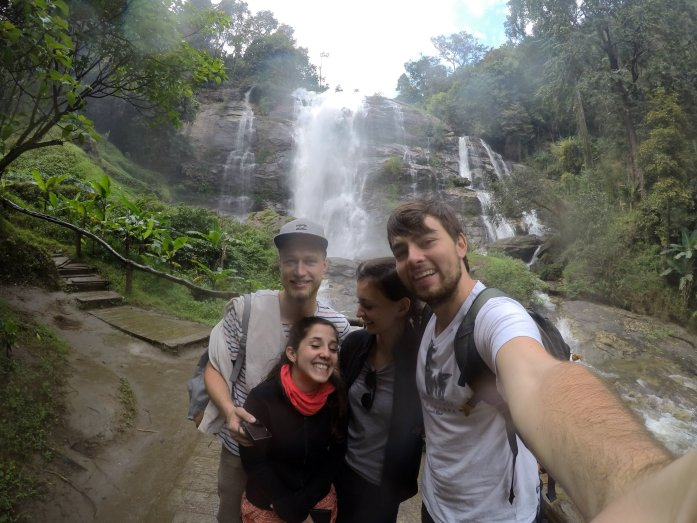
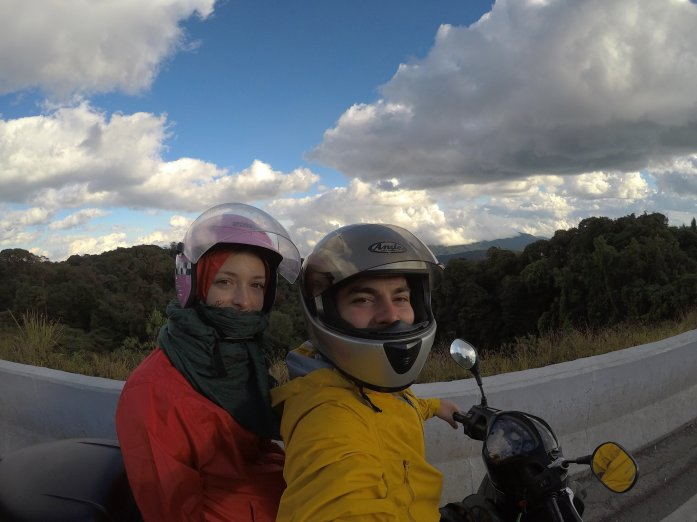
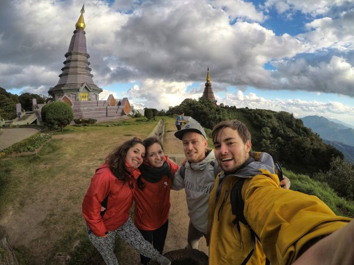
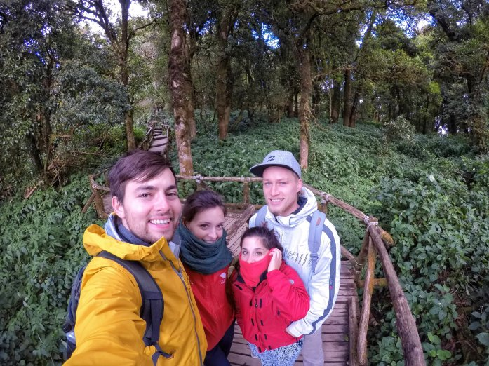
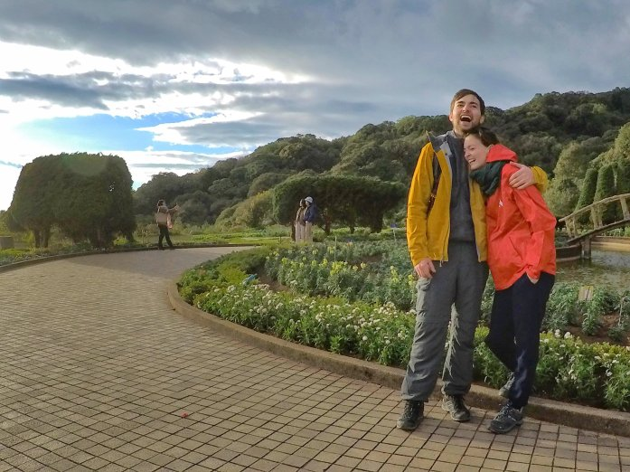

A 100 Km da Chiang Mai si trova il parco nazionale del Doi Inthanon (doi = montagna) che contiene la montagna più alta (piu di 2500 m.s.m.) di tutta la Thailandia. Assieme ad Angela e Flavien abbiamo noleggiato uno scooter e ci siamo lanciati verso l’esplorazione di questo parco avvicinandoci sempre di più alla vetta!
Dopo due ore e mezza di scooter e le chiappe dolenti siamo arrivati nel parco nazionale.
Qui iniziava la salita e il nostro scooter quasi quasi non ce la faceva! In vetta al Doi Inthanon siamo stati accolti da un clima molto poco thailandese: 9 gradi Celsius!!
  Il ritorno verso Chiang Mai è stato più facile (discesa) anche se, muoversi nel traffico e sulle strade thailandesi non sempre è stato proprio facile!
Un grande grazie ad Angela e Flavien per la bellissima giornata! Speriamo di rivedervi presto!
Comment Section